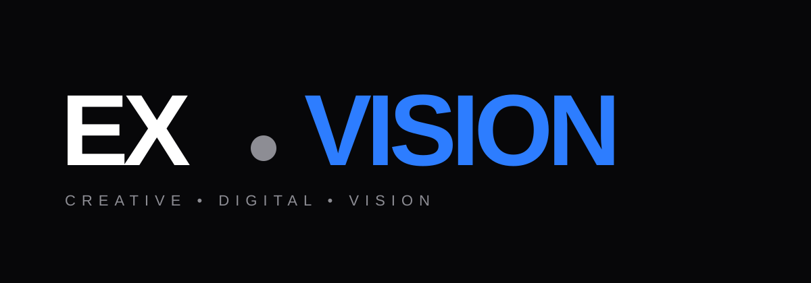
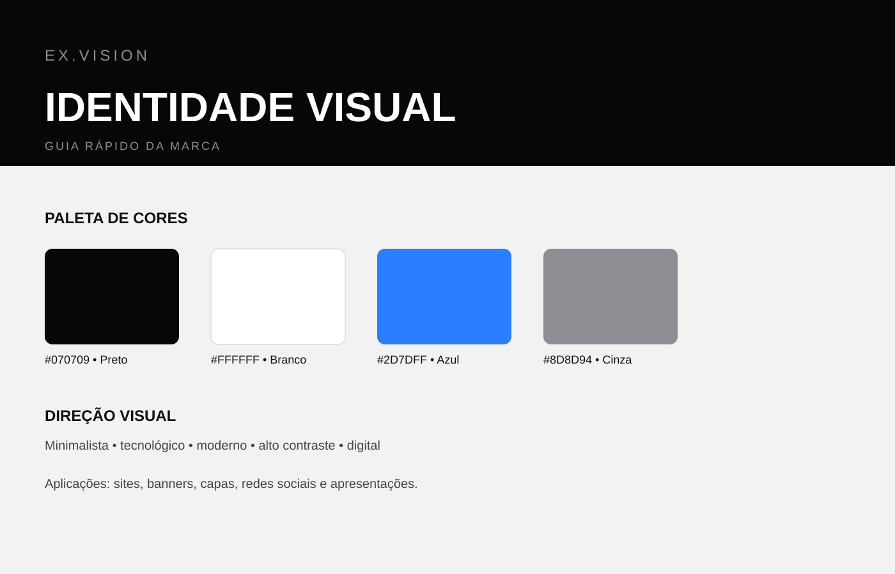

Logo
Marca construída com tipografia forte, contraste alto e um ponto de destaque para transmitir tecnologia e criatividade.
Projeto de identidade visual desenvolvido por Everton Luiz para a própria marca EX.VISION, com foco em design gráfico, edição de vídeo e desenvolvimento web.


Marca construída com tipografia forte, contraste alto e um ponto de destaque para transmitir tecnologia e criatividade.

Paleta baseada em preto, branco, cinza e azul elétrico, criando uma linguagem moderna e consistente.
Website, banners, capas de vídeo, posts para redes sociais, apresentações e materiais digitais.